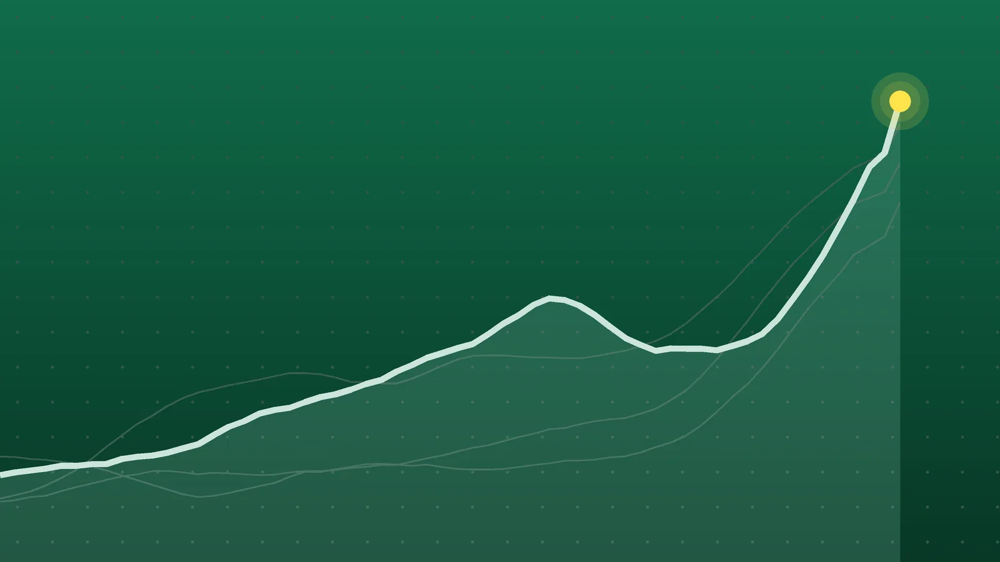

SportsExplainer
MLS Scores, Oct. 24: Nashville Clinches Supporters’ Shield
Nashville locked up the league’s best record with three games to spare, while a crowded Eastern playoff line shifted again with the Red Bulls and Columbus trading places.

Quick take
- Sam Surridge and Hany Mukhtar scored in the second half as Nashville SC won 2-0 at CF Montréal to clinch its first Supporters’ Shield, reaching 70 points.
- The New York Red Bulls beat Inter Miami 2-0 on a seventh-minute own goal by Casemiro and a late Emil Forsberg goal; Messi came off the bench in the 56th minute.
- New England won 2-1 at Philadelphia, ending the Union’s club-record 15-match unbeaten run and moving into second place in the East.
- Colorado beat Western Conference leader Vancouver 1-0, and FC Dallas won 3-0 to move within one point of the Whitecaps.
Why it's trending Fourteen MLS games on Saturday, Oct. 24, included Nashville clinching its first Supporters’ Shield and a loss for Lionel Messi’s Inter Miami.
MLS scores for Oct. 24
Nashville SC is the best team in MLS for 2026, and now it has the trophy to show for it. Second-half goals from Sam Surridge and Hany Mukhtar gave Nashville a 2-0 win at CF Montréal on Saturday afternoon, clinching the club’s first Supporters’ Shield with three regular-season games left, according to the club. The same result knocked Montréal out of playoff contention.
Lionel Messi started on the bench for Inter Miami, a day after accepting an award in Spain, and the New York Red Bulls won 2-0 in New Jersey. Later, New England ended Philadelphia’s 15-game unbeaten run and climbed to second in the East. All 14 games on the slate were completed.
All final scores
| Winner | Score | Loser | Note |
|---|---|---|---|
| Nashville SC (away) | 2-0 | CF Montréal | Surridge (52nd) and Mukhtar (76th); Shield clinched |
| Columbus Crew (home) | 4-2 | Toronto FC | Malte Amundsen scored twice; Columbus finished with 10 men |
| New York Red Bulls (home) | 2-0 | Inter Miami | Casemiro own goal in the 7th; Emil Forsberg added a late goal |
| FC Cincinnati (away) | 2-0 | D.C. United | Evander scored one and set up Tom Barlow for the other |
| New England Revolution (away) | 2-1 | Philadelphia Union | Carles Gil penalty in stoppage time proved the winner |
| Chicago Fire (away) | 3-2 | Atlanta United | Three goals in a row after falling behind early |
| FC Dallas (home) | 3-0 | San Jose Earthquakes | Petar Musa scored twice in the last eight minutes |
| Austin FC (away) | 2-1 | Sporting Kansas City | Myrto Uzuni scored both, the winner in the 86th |
| Colorado Rapids (home) | 1-0 | Vancouver Whitecaps | Morgan Whittaker scored in the 81st |
| Real Salt Lake (home) | 3-0 | St. Louis City | Sergi Solans scored twice; St. Louis had 10 men after the 44th |
| Portland Timbers (home) | 3-2 | Charlotte FC | Alexander Aravena won it six minutes into stoppage time |
| Orlando City | 2-2 | New York City FC (draw) | Jonathan Shore tied it for NYCFC in the 99th minute |
| San Diego FC | 2-2 | Seattle Sounders (draw) | Cédric Bakambu scored twice to erase a 2-0 deficit |
| Houston Dynamo | 0-0 | Minnesota United (draw) | Jonathan Bond made five saves for Houston |
Scores were checked against VAVEL’s results page and the game reports linked below.
Nashville finishes the Shield race early
After a quiet first half, Surridge broke through in the 52nd minute, knocking in a rebound after his own header was saved, for his team-leading 18th goal of the season, Field Level Media reported. Mukhtar made it 2-0 in the 76th, picking off a clearance and shooting into the top corner off the goalkeeper. It was his sixth straight MLS game with a goal, per the club.
Brian Schwake made six saves for a club-record 14th clean sheet this season. Nashville is 21-3-7 with 70 points and has already locked up home-field advantage at GEODIS Park for every playoff round it reaches. Montréal fell to 6-18-7 and has one win in its last 11 games.
Messi comes off the bench as the Red Bulls win
Messi had flown to Oviedo, Spain, on Thursday to receive the Princess of Asturias Award for Sports, and coach Cristian “Kily” González told ESPN that limiting his minutes had been planned in advance. He entered in the 56th minute with Miami already down a goal, after Casemiro turned a cross into his own net in the seventh.
The league’s top scorer, with 25 goals, set up a Telasco Segovia shot that hit the crossbar, but his run of 13 straight games with a goal or assist ended. Forsberg sealed it in second-half stoppage time with his first goal since Aug. 15, Field Level Media noted. The win ended a two-game losing streak for the Red Bulls (11-14-6) and lifted them into a playoff position.
Philadelphia’s streak ends
The Union had not lost in the league since a 6-4 defeat at Miami on May 24, a club-record 15 games, going 12-0-3 under interim coach Ryan Richter, the AP reported. Dor Turgeman put New England ahead in first-half stoppage time. Gil then won and converted a penalty in the first minute of second-half stoppage time, awarded after a video review found he was onside, according to The Philadelphia Inquirer. It was his career-best 13th goal of the season.
Rookie Neil Pierre scored for Philadelphia deep into the 12 added minutes, but it came too late. Matt Turner and Andre Blake each made six saves. New England (17-10-4) has won three straight and swept the season series.
What it means
Nashville’s lead over the next-best teams, New England, Miami and Vancouver, is now 15 points. The bigger question is the single-season record of 74 points, set by Inter Miami in 2024, according to Field Level Media. With three games left, Nashville can reach 79. It needs 5 more points to pass the record, which means two wins, or one win and two draws.
In the East, New England and Miami are level on 55 points, with the Revolution second because they have more wins (17 to 15). The playoff line is the tightest part of the table:
| Place in East | Team | Points |
|---|---|---|
| 7th (tied) | Orlando City | 42 |
| 7th (tied) | FC Cincinnati | 42 |
| 9th | New York Red Bulls | 39 |
| 10th | Columbus Crew | 38 |
| 11th | Toronto FC | 36 |
Nine teams per conference qualify, with eighth and ninth meeting in a one-game wild-card round on Nov. 18, per MLS’s playoff schedule. Columbus briefly held ninth after its afternoon win, Field Level Media reported, before the Red Bulls passed them by a point that evening. Charlotte (47 points) could have clinched a spot with a win but lost in Portland.
In the West, Vancouver’s loss in Colorado left the Whitecaps on 55 points, and FC Dallas (54) is one point back after beating San Jose, per Standings Today. Musa’s two goals gave him 22, and Dallas now has 58 goals, a club record, according to the club. Ninth place is the LA Galaxy on 40, with Real Salt Lake one point behind after its win and Portland at 37. San Diego, on 35, sits five points below the line with three games left.
What’s next
The LA Galaxy and LAFC play Sunday, Oct. 25, the only MLS game that day. A full midweek round follows on Wednesday, Oct. 28, including:
- Philadelphia at Nashville, 8:30 p.m. ET
- Columbus at FC Dallas, 8:30 p.m. ET
- San Diego at Vancouver, 10:30 p.m. ET
- Colorado at San Jose, 10:30 p.m. ET
- FC Cincinnati at Inter Miami and the Red Bulls at New England
Decision Day, when all 30 clubs play, is Saturday, Nov. 7.
Sources
- Field Level Media via Yardbarker Nashville claims Supporters' Shield while eliminating MontrealOct. 24, 2026
- Nashville SC Renasant Recap: Nashville Soccer Club Wins 2026 MLS Supporters' Shield for First TimeOct. 24, 2026
- ESPN Lionel Messi comes off bench as Casemiro own goal sees Red Bulls beat MiamiOct. 24, 2026
- Field Level Media Red Bulls blank Inter Miami as Lionel Messi plays limited minutesOct. 24, 2026
- AP via ABC News Revolution put end to Union's club-record 15-match unbeaten streak with 2-1 victoryOct. 24, 2026
- The Philadelphia Inquirer The Union's unbeaten run finally ends with a 2-1 loss to New England, in a potential playoff previewOct. 24, 2026
- Field Level Media Crew inch into playoff position by knocking off TorontoOct. 24, 2026
- AP via WJLA Evander and Tom Barlow each score as Cincinnati beats D.C. United 2-0Oct. 24, 2026
- AP via ABC News Jonathan Shore scores late in 2nd-half stoppage time to help NYCFC play Orlando City to 2-2 drawOct. 24, 2026
- Field Level Media via Yardbarker Chicago Fire push past Atlanta United to snap 2-game skidOct. 24, 2026
- FC Dallas via OurSports Central FC Dallas Earns 3-0 Win over San Jose EarthquakesOct. 24, 2026
- Sporting KC via OurSports Central Sporting KC Falls to Late 2-1 Loss Versus Austin FCOct. 24, 2026
- Field Level Media via Yardbarker Houston pulls out scoreless draw vs. desperate Minnesota UnitedOct. 24, 2026
- Colorado Rapids via OurSports Central Morgan Whittaker Goal Secures Rapids' Crucial Victory against Vancouver Whitecaps in Playoff PushOct. 24, 2026
- The Salt Lake Tribune Real Salt Lake routs St. Louis City SC as race for a playoff spot continuesOct. 24, 2026
- AP via ABC News Alexander Aravena, Ariel Lassiter rally Timbers to 3-2 victory over CharlotteOct. 24, 2026
- San Diego FC via OurSports Central San Diego FC Comes from Behind to Draw Seattle Sounders, 2-2Oct. 25, 2026
- VAVEL MLS results, Season 2026Oct. 24, 2026
- Standings Today 2026 MLS Standings Today: East, West & Playoff PictureOct. 25, 2026
- Field Level Media Supporters' Shield within Nashville's reach against EarthquakesOct. 16, 2026
- MLS Audi 2026 MLS Cup Playoffs: Key dates, schedule informationOct. 24, 2026
Keep reading

College Football Scores, Oct. 24: UCF Stuns No. 2 BYU in 2OT
FBS college football scores for Saturday, Oct. 24, 2026: UCF beat No. 2 BYU 39-31 in double overtime, Texas held off Ole Miss and Utah stayed unbeaten.

NBA Scores, Oct. 24: Nuggets Erase 23-Point Gap to Win in OT
NBA scores for Oct. 24, 2026: all 8 finals, including Denver’s 141-135 overtime comeback over New Orleans, Booker’s 43 for Phoenix and Philadelphia’s 3-0 start.

NHL Scores, Oct. 24: Nylander Hits 300 as Leafs Rout Oilers 7-2
NHL scores for Oct. 24, 2026: all 12 finals, including Toronto’s 7-2 win in Edmonton, Utah’s overtime comeback on Tampa Bay and Carolina’s 4-0 shutout.